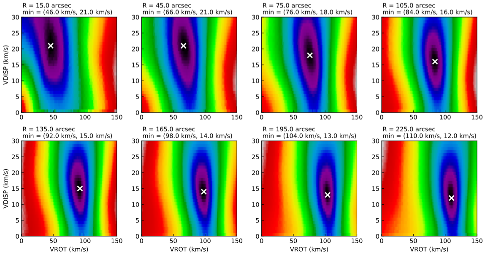

SPACEPAR task¶
SPACEPAR allows the user to explore the full parameter space for any pair of 3DFIT parameters in a given range. It is useful to check that 3DFIT is converging to a good enough minimum of the parameter space. It can be very slow to run, but it is particularly recommended for low quality observations and small data-cubes.
Parameters¶
Basic parameters for SPACEPAR are the same of the 3DFIT task. Additional specific parameters are:
SPACEPAR [false]. This flag enables the SPACEPAR task. Can be true or false.
P1 [none]. First parameter to explore. Can be any of the 3DFIT FREE parameters.
P1PAR [none]. A list of three numbers: the minimum value, the maximum value and the step size of the parameter space sampling for P1. For example, ‘0 100 1’ samples between 0 and 100 with step size 1.
P2 [none]. Second parameter to explore. Can be any of the 3DFIT FREE parameters.
P2PAR [none]. A list of three numbers: the minimum value, the maximum value and the step size of the parameter space sampling for P2. For example, ‘1 50 0.5’ samples between 1 and 50 with step size 0.5.
Outputs¶
The task produces the following outputs:
A FITS file NAME_spacepar.fits, containing the full parameter space for each ring.
A FITS file mask.fits, containing the mask used.
A Python script spacepar.py to conveniently plot parameter spaces.
A PDF file NAME_spacepar.pdf with the plots of parameter spaces for each ring (Python required), produced through the spacepar.py script. Example below.

Example¶
Above outputs can be obtained with the following parameter file and the usual example datacube.
FITSFILE ngc2403.fits
THREADS 1
/////////// SPACEPAR-specific /////////////
SPACEPAR true
//First parameter
P1 VROT
//Second parameter
P2 VDISP
//First parameter range
P1PAR 0 150 2
//Second parameter range
P2PAR 0 30 1
///////////////////////////////////////////
// OTHER PARAMETERS IN COMMON WITH 3DFIT
NRADII 8
RADSEP 30
VSYS 132.8
XPOS 77
YPOS 77
VROT 120
VDISP 8
INC 60
PA 123.7
Z0 10
FREE VROT VDISP
LTYPE 2
FTYPE 2
DISTANCE 3.2
MASK SEARCH
WFUNC 2